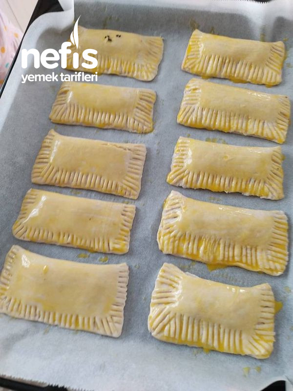

Milföy Hamurundan Sebzeli Börek
avuç, kabak ve patates ile harmanlanan sebzeli milföy börek nasıl yapılır? Çay saatlerine çok yakışacak sebzeli milföyleri, listenize eklemeyi unutmayın.
Milföy Hamurundan Sebzeli Börek Tarifi İçin Malzemeler
- 1 yemek kaşığı tereyağı
- 3 adet pırasa
- 1 adet patates
- 1 adet havuç
- 1 adet milföy hamuru
- Tuz
- Karabiber
- Kırmızı toz biber
- Kimyon
- Zerdeçal
Üzeri için
- 1 adet yumurta sarısı
- Susam
- Çörek otu
Milföy Hamurundan Sebzeli Börek Tarifi Nasıl Yapılır?
Herkese merhabalar kahvaltıya pratik bir börek tarifim denemenizi tavsiye ederim.
- Ben 10 adet milföy kullandım. Ama bu malzeme oranıyla 1 paket milföy hamuruna yeter. Artan malzemeyle güzel bir fırın yemeği yaptım tarifini ekleyeceğim.
- Patates ve havucu kabuklarını soyup yıkayalım, rendeleyip suyunu sıkalım.
- Pırasayı halka şeklinde ince olarak keselim.
- Tavaya tereyağını alıp erdikten sonra pırasaları ekleyip, pırasalar kendini salınca patates ve havucu ekleyip güzelce kavuralım.
- Son olarak tuz ve baharatları ekleyip ocaktan alalım.
- Açılan milföylerin içine harcımızdan koyalım kare şeklinde kapatıp kenarları çatalla çizelim.
- Son olarak üzerine yumurta sarısı sürüp susam ve çörekotu dökelim ve 180 derece ısıtılmış fırına verelim üzeri kızarana kadar pişirip fırından alalım afiyetle yiyelim.
Milföy Hamurundan Sebzeli Börek Tarifi Fotoğrafları Yapılışı

Afiyet olsun